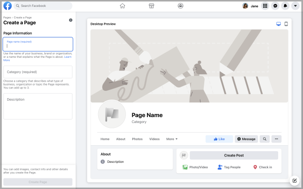

Não conseguiu fazer login?
Para conectar o Instagram à Creators com sucesso,
você precisa:
1
Certifique-se de que a conta do Instagram seja
uma conta pública de Criador/Empresarial.
uma conta pública de Criador/Empresarial.
Como conectar uma conta Criador/Empresarial
do Instagram a uma página do
Facebook
Para conectar uma página pública do Facebook a uma conta Empresarial ou de Criador de conteúdo do Instagram, conclua as etapas a seguir.

1Faça login no Facebook e no Feed de Notícias, selecione "Páginas".
2 Selecione a página do
Facebook desejada e, em seguida, selecione
"Configurações da página". 1/2
2 Selecione a página do
Facebook desejada e, em seguida, selecione
"Configurações da página". 2/2
..svg)
3Selecione "Instagram" na
coluna da esquerda e selecione
"Conectar conta".
1/2

3Selecione "Instagram" na
coluna da esquerda e selecione"
Conectar conta".
2/2
4Ative "Permitir acesso a
mensagens do Instagram na caixa de
entrada e
selecione "Continuar".
5Digite o nome de usuário e a
senha da conta Comercial/Criador
desejada e
selecione "Log In".
6Depois que os dois estiverem
vinculados, a página de configurações
do
Instagram no Facebook aparecerá.
Como faço para criar uma
Página do Facebook pública?
Crie uma página pública no Facebook seguindo os passos abaixo:

1 Para começar a configurar
uma página pública do Facebook, acesse
1 Para começar a configurar
uma página pública do Facebook, acesse
facebook.com/pages/create .
2 Preencha as informações
relevantes:
- Nome
- Categoria
- Opcional: Descrição
3Selecione "Criar página ".
4Adicione uma foto de perfil ou capa selecionando "Editar"
2
Tenha uma página pública no Facebook
Como faço para
criar uma Página do Facebook pública?
3
A conta Criador/Empresarial do Instagram precisa estar vinculado a uma página
pública do Facebook.
Como faço para
vincular uma conta Criador/Empresarial do
Instagram a uma página pública do Facebook?
Instagram a uma página pública do Facebook?